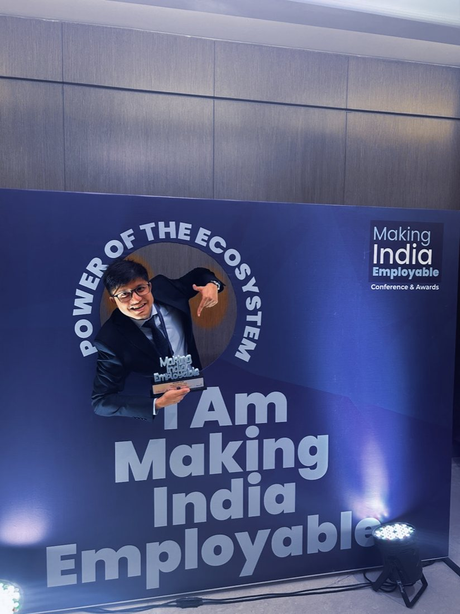
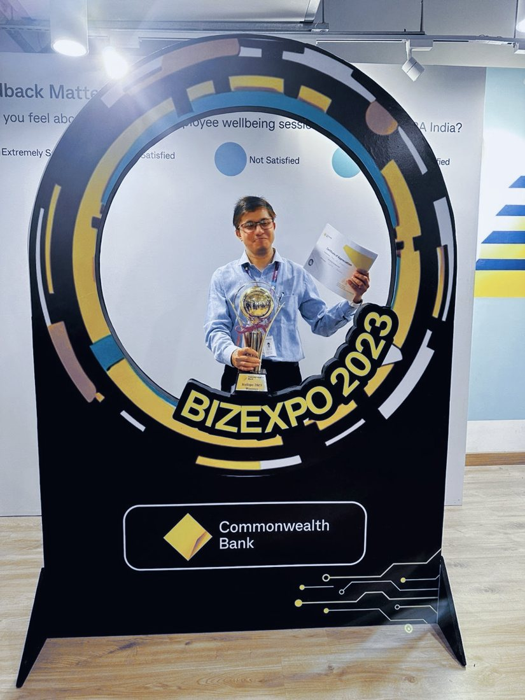
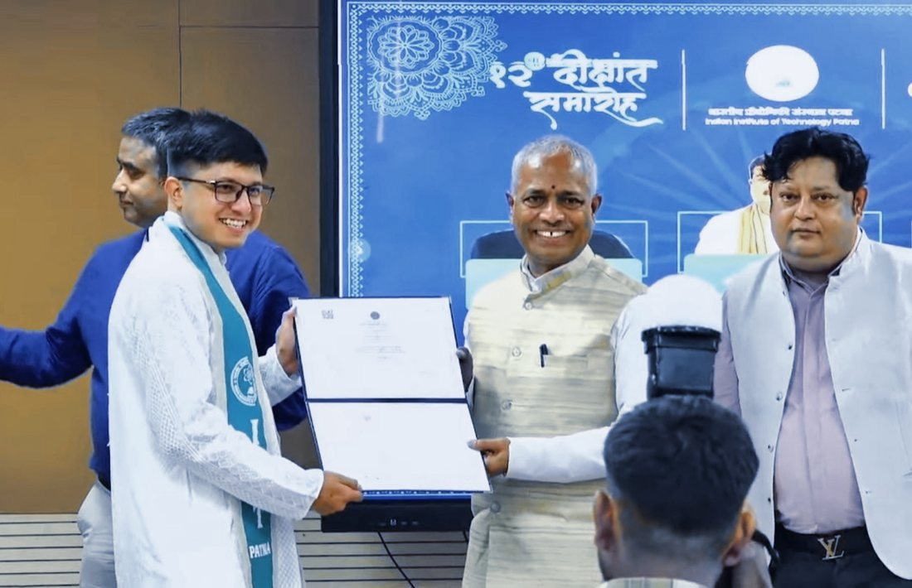
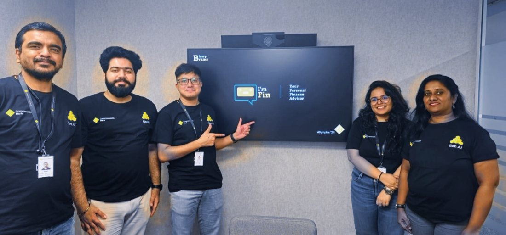
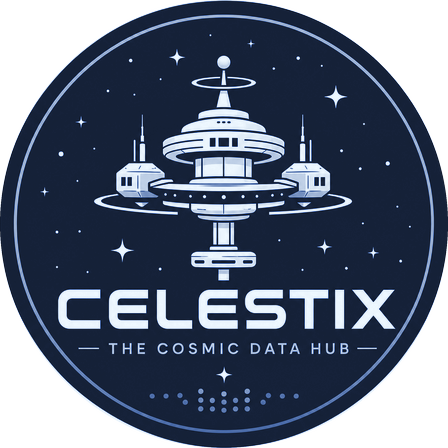
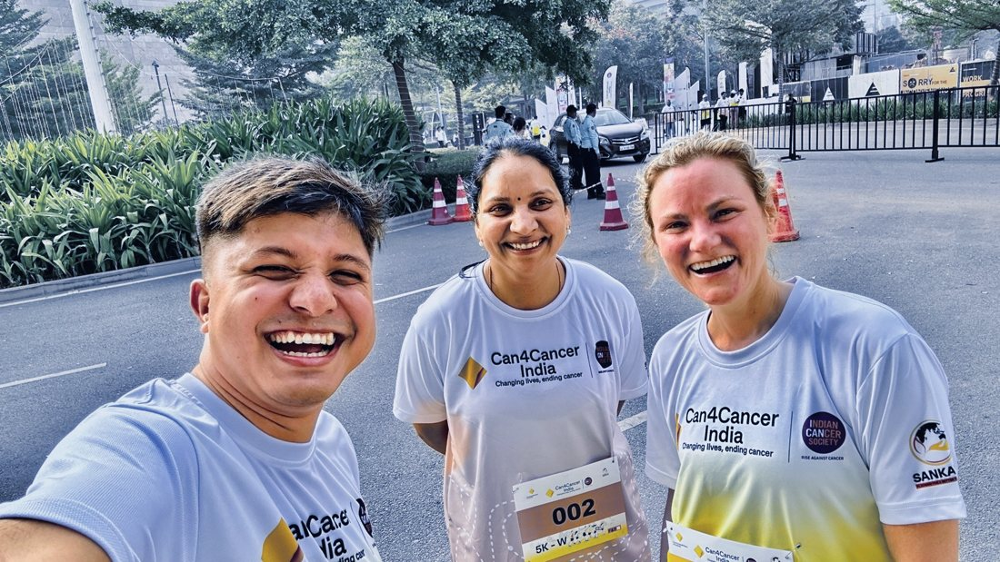

The product leader
Asks: who does it help?
LearnedCSPO, CSM and an MBA in Finance
ApplyingDiscovery, roadmap, dark launch and NPS
VP – Product Owner · Data & AI · MBA (Finance)
I'm Akash, a product leader with a data & AI edge. At Bankwest Tech, Commonwealth Bank of Australia, I take Seamless Lending from discovery to delivery, building on a 20-point NPS uplift in my last role.
The technical edge: 10+ years by May 2027 across BI, data platforms, governed data products and lineage, AWS certified in data and ML engineering, fluent with engineers on design trade-offs.
The product leader: outcome-led roadmaps, continuous discovery, dark-launch validation and a voice-of-customer loop, aligned to group strategy.
Now · since Oct 2026
As VP – Product Owner, I run the product lifecycle for the home lending document journey in the Bankwest Broker Portal: outcome-led roadmaps, continuous discovery, validated delivery and stakeholder alignment.
User research, customer feedback and detractor comments, turned into problem statements.
Figma prototypes that make a hypothesis testable before engineering commits.
Seamless Lending roadmaps, prioritised with stakeholders, the Crew Lead and Crew Tech Leads against group strategy.
User research before and after dark launch, to validate value and usability ahead of scale.
A closed feedback loop: detractor themes feed the backlog to keep NPS growing.
Product scope: document submission to processing
Identifying payslips that are out of date.
Working out income from year-to-date figures.
Treating sacrificed income correctly.
Applying policy to salaried income documents.
Side projectAlongside the core roadmap, I explore Snowflake solutions using Cortex and other AI approaches.
Voice of the broker
Bankwest’s published July 2026 results, from before I joined the crew: Broker Pulse, Sep 2026. The framework is my own product thinking, not a Bankwest result or target.
Value proposition I am working toward
A clearer path to a submission that is right the first time.
Income evidence that is consistent and easier to act on.
Less back-and-forth on the way to a home.
Why it matters: Bankwest has publicly described “right first time” submissions as critical to faster approvals. Broker Daily, Apr 2026
About
I'm a product management and product delivery leader who grew up in data. I started in 2017 automating credit-card operations, moved through BI and solution design, then owned data products across business banking and lending at Commonwealth Bank.
I lead cross-functional squads through influence, and mentor along the way: aligning senior stakeholders, making prioritisation trade-offs explicit and building risk and controls into the product, not after it.
The technical edge is deliberate. I can go deep on data models, lineage and AI design trade-offs with senior and staff engineers, then explain the decision to an executive. And I still build: vibecoding to solve world problems, one prototype at a time.
Asks: who does it help?
LearnedCSPO, CSM and an MBA in Finance
ApplyingDiscovery, roadmap, dark launch and NPS
Asks: can we trust it?
LearnedAWS Data Engineer, UNSW Analytics
ApplyingData products, from pipelines to Celestix
LearnedAWS ML Engineer, Stanford ML, IBM GenAI
ApplyingApplied AI with engineering, and Compass360 on Cortex
Moments




Experience
Bankwest Tech, Commonwealth Bank of Australia · Bangalore
ProductData
Commonwealth Bank of Australia · Bangalore
ProductData
Commonwealth Bank of Australia · Bangalore
ProductData
Tata Consultancy Services (Client: PepsiCo) · Kolkata
Data
Tata Consultancy Services (Client: Citibank N.A.) · Kolkata
Data
Projects
Personal projects and prototypes, built to learn and separate from my work at the bank. All on GitHub.
A federated data product marketplace built on the Open Data Product Specification (ODPS v4.1). Domain teams publish, discover and consume data products with contracts, SLAs and governance built in — plus a gamification layer (XP, quests, coins and leaderboards) that rewards good data behaviour.
celestix-hub.netlify.app

A zero-to-one home lending discovery concept with six feature hypotheses: Home Zone borrowing power from transaction data, a free offset tier, a Home Deposit Saver, automatic account linking, a self-serve application and Repayment Boosters. Illustrative data.
Unofficial personal concept · not a Bankwest product or endorsed by Bankwest
A Snowflake-native Customer 360 and Next Best Action engine for banking and insurance. The rules decide, the AI explains, and every recommendation carries its proof.
Snowflake CoCo CLI Hackathon, Grand Finale · Team Coskilled · synthetic data, public demo on Postgres
Open the appA product concept that maps the CommBank travel journey into a single product surface. Five modules: trip readiness, a rate-lock ledger, card-acceptance confidence, emergency support and a benefits wallet, demonstrated on a simulated transaction feed and globe.
Unofficial personal concept · not a CommBank product or endorsed by CommBank
A real-estate data product built end to end: a pipeline designed to collect 18,000+ listings a day across 46 Kolkata localities, with price history in Postgres and below-median deal flags in a five-tab dashboard.
A Spotify-Wrapped-style year-end story for retail banking: turns a customer's financial activity into a personalised Money Spirit across nine animated, swipeable story cards — finishing with an Instagram-ready share card. Synthetic data, privacy by design.
The business-banking counterpart: a 10-screen business momentum story that turns synthetic banking signals into a shareable recognition moment, "Your business is a Local Legend". Built to test a customer-engagement hypothesis.
The Money Spirit proposition adapted end to end for the Bankwest brand: same story engine, different design system. A study in scaling one product narrative across two brands, on synthetic data.
Social-listening dashboard that tracks anti-India hate speech across Bluesky and Reddit — curated keyword lexicon, weekly aggregates and cross-platform comparison, on a source-agnostic architecture ready for more platforms.
Regression and classification from first principles — coursework notebooks from the Stanford / DeepLearning.AI Machine Learning Specialization, implemented in Python and NumPy.
Writing
I write about product management and the data engineering that powers it.
Education & Credentials
Indian Institute of Technology (IIT) Patna
CPI 9.07 / 10
Vidyasagar University
71.7%
West Bengal State University
60.75%
Amazon Web Services
Amazon Web Services
Scrum Alliance
UNSW Sydney
Best Digital Experience, CBA CCD — for B360, a unified metadata-rich customer view accelerating AI across business domains.
Honoured for contributions to employability and professional excellence.
Recognized for mapping customer journeys in CDAO, CBA India.
Also: Chair, CBA India ADVANTAGE (2023 — present) · Co-chair, Project Advisory Council, TCS (2019)
Skills
Beyond the desk
Travel is my reset button. I've explored India end to end, plus six countries so far — chasing nature, museums and modern architecture, and always the local food (and the people who make it).

I run almost every day. It's not about pace — it's where my thinking gets clear.Strava
Contact
Product strategy, discovery, delivery, or where data and AI change the answer: I'm always up for a good conversation.
Bengaluru, India